THE RESISTANCE BEGINS
Formed in secret under the nose of Dolores Umbridge, Dumbledore's Army was a group of Hogwarts students dedicated to training in Defense Against the Dark Arts. Under Harry Potter's instruction, they learned to cast Patronuses and combat curses, eventually playing a pivotal role in the Battle of Hogwarts.
CHARACTERS OF THE GROUP
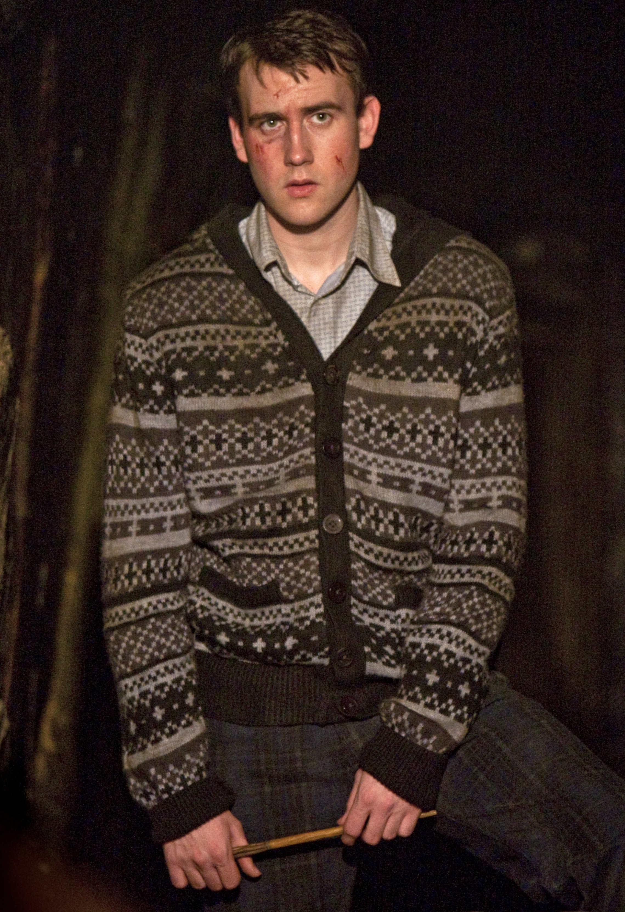
NEVILLE LONGBOTTOM
Initially clumsy and forgetful, Neville underwent a dramatic character arc, eventually destroying the final Horcrux.
GINNY WEASLEY
The youngest Weasley. She grew into a powerful witch known for her Bat-Bogey Hex and co-led the D.A.


LUNA LOVEGOOD
An eccentric Ravenclaw who believed in strange creatures. She was incredibly perceptive and a staunch friend.
FRED & GEORGE WEASLEY
Identical twins and agents of chaos. They founded "Weasleys' Wizard Wheezes." Fred was killed in the Battle of Hogwarts.
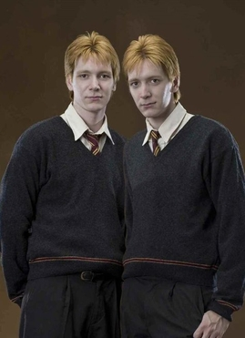
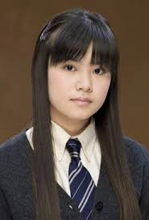
CHO CHANG
Popular Ravenclaw Seeker. She dated Cedric Diggory and Harry Potter. Her time in the D.A. was complicated by grief.
DEAN THOMAS
Dean Thomas was artistic and good-natured. He joined the DA early and trained diligently. Dean was hunted by Snatchers. He fought in the Battle of Hogwarts.
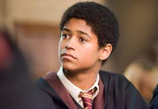
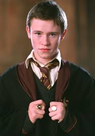
SEAMUS FINNIGAN
Seamus Finnigan was known for explosive spellwork. He was hot-tempered but loyal to Harry. Seamus joined the DA after initial doubt. He played a key role in the final battle.
LAVENDER BROWN
Lavender Brown was social and expressive. She briefly dated Ron Weasley. Lavender joined the DA despite initial fears. She was gravely injured during the final battle.
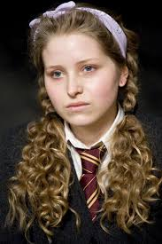
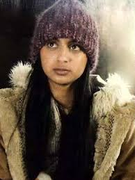
PARVATI PATIL
Parvati Patil enjoyed Divination and social life. She joined the DA to learn defensive magic. Parvati fought against Voldemort’s forces. She stood her ground in the final battle.
LEE JORDAN
Lee Jordan was famous for humorous Quidditch commentary. He supported Harry publicly. Lee helped run Potterwatch. He fought in the Battle of Hogwarts.

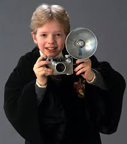
COLIN CREEVEY
Colin Creevey idolized Harry Potter. He was enthusiastic and brave despite his age. Colin returned to fight despite being underage. He was killed in the Battle of Hogwarts.
DENNIS CREEVEY
Dennis Creevey was Colin’s younger brother. He admired Harry greatly. Dennis joined the DA later. He survived the final battle.
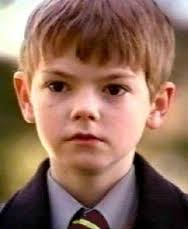
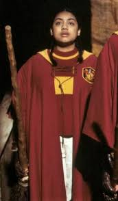
ALICIA SPINNET
Alicia Spinnet was a skilled Gryffindor Chaser. She joined the DA to learn defense. Alicia fought during the final battle. She remained loyal to Hogwarts.
ANGELINA JOHNSON
Angelina Johnson was a talented Chaser. She later became Gryffindor Quidditch Captain. Angelina joined the DA willingly. She fought in the Battle of Hogwarts.
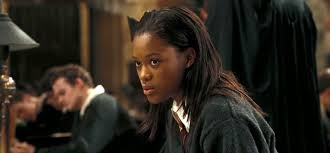
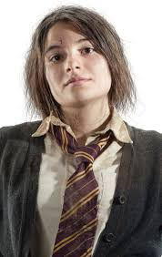
KATIE BELL
Katie Bell played Chaser for Gryffindor. She was cursed by a dangerous necklace. Katie recovered after months of healing. She returned to fight bravely.
PADMA PATIL
Padma Patil was logical and intelligent. She transferred to Ravenclaw. Padma joined the DA to resist Umbridge. She fought during the final battle.
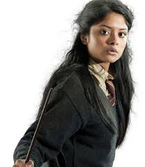
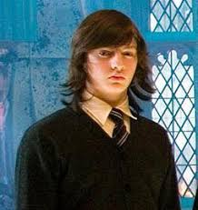
MICHAEL CORNER
Michael Corner was a Ravenclaw student. He dated Ginny Weasley. Michael joined the DA. He supported the rebellion against Voldemort.
TERRY BOOT
Terry Boot was a Ravenclaw student. He joined the DA after believing Harry. Terry trained seriously. He fought in the final battle.
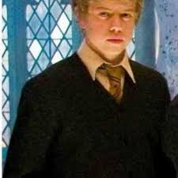
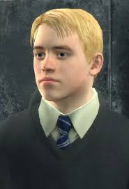
ANTHONY GOLDSTEIN
Anthony Goldstein was a Ravenclaw student. He joined the DA enthusiastically. Anthony valued knowledge and justice. He fought against Death Eaters.
HANNAH ABBOTT
Hannah Abbott was loyal and kind. She joined the DA early. Hannah fought bravely at Hogwarts. She later became a Healer.
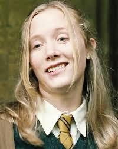
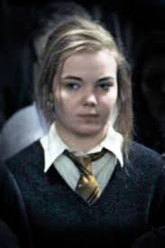
SUSAN BONES
Susan Bones lost family to Death Eaters. She joined the DA seeking justice. Susan trained hard in defensive magic. She fought in the final battle.
ERNIE MACMILLAN
Ernie Macmillan was proud and outspoken. He believed in fairness and rules. Ernie joined the DA wholeheartedly. He fought bravely during the war.